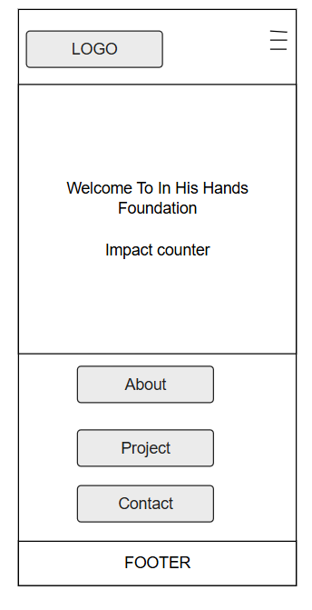
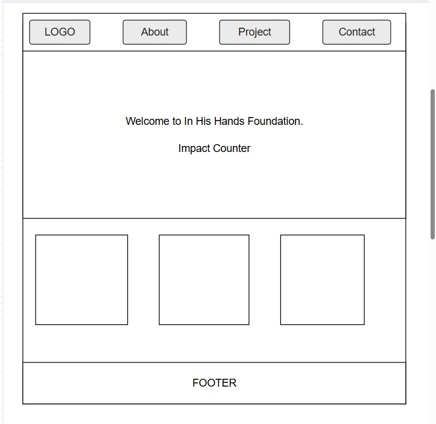

Site Purpose
This website will showcase Emilys nonprofit organization, In His Hands Foundation, which is dedicated to uplifting communities through education, healthcare, and outreach initiatives. It will serve as a digital hub for sharing impact stories, connecting with volunteers, and providing access to resources and project updates.
Scenarios
- How can I get involved with one of the foundations outreach projects?
- Where can I learn more about the foundations mission and leadership team?
Color Schema
- Midnight Blue (#2C3E50): Used for headers, navigation bar, and footer
- Cloud White (#ECF0F1): Used for background and body text areas
- Hope Green (#27AE60): Used for buttons, highlights, and impact counters
Typography
- Merriweather: Used for headings to convey warmth and trust
- Open Sans: Used for body text for clarity and accessibility
Wireframes
 Sketches of homepage layout:
- Mobile View: Stacked layout with logo, welcome message, impact counter, and navigation drawer
- Desktop View: Horizontal navigation bar, hero section with welcome message and counter, grid layout for featured projects
Wireframe sketches will be added as images or linked files.
Planned File Structure
in-his-hands-foundation/
├── index.html
├── about.html
├── projects.html
├── contact.html
├── references.html
├── styles.css
├── scripts.js
└── images/